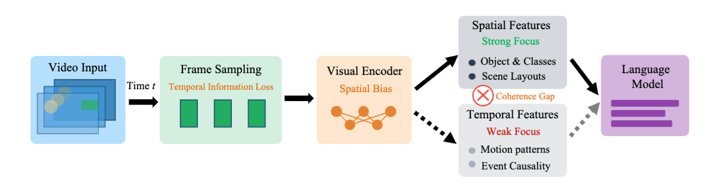
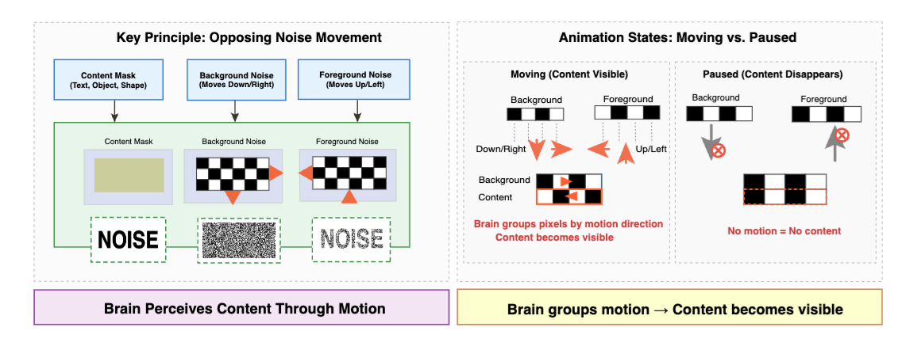

If a video carries information only in how frames change over time — and each frame is pure noise — can today's Video-VLMs see it?
Nature already does this. Fireflies communicate through flash sequences, EEG pathologies emerge from temporal patterns, Morse code carries language without spatial form. Yet modern video understanding pipelines extract frame features first and treat time as an afterthought.

A synthetic benchmark where each frame is pure noise and the content emerges only from how the noise moves.
- 451 videos · 960×540 · avg 7.1 s · ~333 frames
- 3 categories: Text (46.6%), Object Images (40.8%), Dynamic Scenes (12.6%)
- Opposing-motion noise for text/images; threshold-gated motion for depth videos
- Generator releases an indefinitely extendable dataset
Each clip below is pure noise frame-by-frame. Play it and the content snaps into view; pause it and every frame is static. This is the effect VLMs cannot perceive.

Detection is a step function. Below ~2.5 dB SNR, accuracy is ~0%; above it, accuracy jumps to ≥85%. Comparable thresholds: images at 6.0 dB, dynamic scenes at 9.0 dB.
| Category | Basic SNR | Perceptual | Temp. Coh. | Motion C. |
|---|---|---|---|---|
| Images | −46.95 | −47.28 | 8.00 | 7.17 |
| Dynamic Scenes | −48.95 | −63.43 | 21.91 | −3.18 |
| Text | −39.27 | −49.18 | 7.84 | 8.26 |
Read: Dynamic Scenes have the highest temporal coherence (21.9) yet near-zero motion contrast — the regime current VLMs cannot exploit.
Humans read these stimuli at 98%. Every Video-VLM we evaluated — open or closed, 2 B to 78 B parameters, with or without chain-of-thought — collapses to a flat 0%.
| Model | Direct Prompt | Chain‑of‑Thought | Params |
|---|---|---|---|
| Human Performance | 98.0 ± 0.6 | — | — |
| Open-Source Video-VLMs | |||
| VideoLLaMA3-7B | 0.0 | 0.0 | 7B |
| VideoLLaMA3-2B | 0.0 | 0.0 | 2B |
| TimeChat-7B | 0.0 | 0.0 | 7B |
| MiniGPT4-Video | 0.0 | 0.0 | 7B |
| MovieChat | 0.0 | 0.0 | 7B |
| Video-ChatGPT-7B | 0.0 | 0.0 | 7B |
| VideoGPT-plus-Phi3-mini-4k | 0.0 | 0.0 | 7B |
| VILA1.5-13B | 0.0 | 0.0 | 13B |
| ShareGPT4Video-8B | 0.0 | 0.0 | 8B |
| VideoLLaMA2-7B | 0.0 | 0.0 | 7B |
| Video-LLaVA | 0.0 | 0.0 | 7B |
| LLaVA-NeXT-Video | 0.0 | 0.0 | 8B |
| InternVL2-40B | 0.0 | 0.0 | 40B |
| InternVL2-8B | 0.0 | 0.0 | 8B |
| InternVL2.5-78B | 0.0 | 0.0 | 78B |
| InternVL2.5-8B | 0.0 | 0.0 | 8B |
| InternVideo2.5-Chat-8B | 0.0 | 0.0 | 8B |
| InternVideo2-Chat-8B | 0.0 | 0.0 | 8B |
| Qwen2-VL-2B-Instruct | 0.0 | 0.0 | 2B |
| Qwen2-VL-7B-Instruct | 0.0 | 0.0 | 7B |
| Qwen2-VL-72B-Instruct | 0.0 | 0.0 | 72B |
| Qwen2.5-VL-3B-Instruct | 0.0 | 0.0 | 3B |
| Qwen2.5-VL-7B-Instruct | 0.0 | 0.0 | 7B |
| Qwen2.5-VL-72B-Instruct | 0.0 | 0.0 | 72B |
| Qwen3-VL-8B-Instruct | 0.0 | 0.0 | 8B |
| Closed-Source Frontier | |||
| Gemini 2.5 Pro | 0.0 | 0.0 | — |
| Gemini 1.5 Pro | 0.0 | 0.0 | — |
| Gemini 2.0 Flash | 0.0 | 0.0 | — |
| GPT-4o | 0.0 | 0.0 | — |
Accuracy (%) on SpookyBench. Failure is invariant to model size, family, and prompting strategy — not a single model exceeds chance.
- Fine-tuning fails. InternVL2.5-8B & Qwen2-VL-7B on 400 videos × 30 epochs → still 0%.
- VJEPA-2 & DINOv3 can't even overfit "is there content?" — loss saturates at chance.
- Explicit motion cues unlock it. Overlaying Farneback motion boundaries lifts Qwen2-VL-7B → 51.5% and GPT-4o → 59.1%.
Pre-compute motion boundaries with classical optical flow, overlay them on the noisy frames, and the same models suddenly score in the 50s.
Confirms the failure is architectural: temporal info is computationally extractable but VLMs can't reach it without spatial hand-holding. Dynamic Scenes stay hard (≤3.5%).
- "Time-blindness" is a robust, architecture-level failure of every modern Video-VLM.
- Future models need dedicated temporal pathways — distributed timing, motion-energy estimation, motion-based figure-ground.
- SpookyBench + generator released to catalyze this direction.